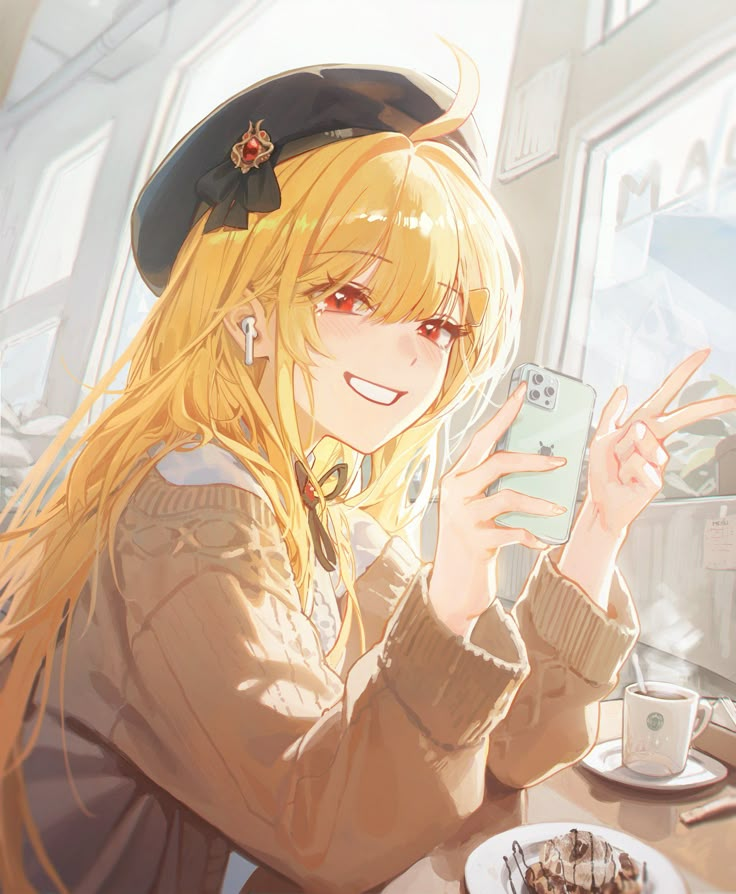

ESTP
ESTP
The Fearless Doer
Siapa Itu ESTP?
ESTP itu jiwa petualang sejati. Mereka hidup untuk aksi, adrenalin, dan tantangan. Penuh spontanitas, suka mencoba hal baru, dan gak suka terjebak rutinitas. ESTP tuh tipe orang yang begitu muncul, semua ruangan langsung kerasa hidup.
Ciri-Ciri & Khas ESTP
Yang bikin ESTP beda banget dari yang lain:
- Super spontan, cepet ambil keputusan tanpa banyak drama
- Suka aksi, dari olahraga ekstrem sampai debat panas
- Gak suka basa-basi, to the point dan blak-blakan
- Jago membaca situasi dan cepat beradaptasi
Kekuatan Sang Petualang
Ini alasan kenapa ESTP itu keren banget:
- Pemecah masalah real-time—gercep dan efektif
- Berani ambil risiko, bahkan saat orang lain ragu
- Energi positifnya nular ke sekitar
- Sering jadi center of attention tanpa usaha keras
Hal yang Perlu Diwaspadai
ESTP keren, tapi tetap manusia biasa juga:
- Sering keburu-buru ambil keputusan tanpa mikir panjang
- Kurang suka aturan dan struktur yang kaku
- Bisa bosan cepet kalau gak ada tantangan baru
- Susah fokus jangka panjang, karena terlalu in-the-moment
ESTP Gallery